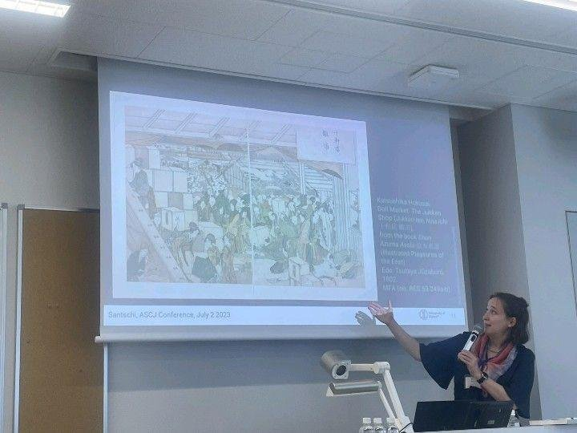

Talks
2026
- MarchDrawing from the Crowd: Combining Citizen Science and Computer Vision to Study Historical Japanese PrintsDigital Humanities Colloquium of the South African Centre for Digital Language Resources (SADiLaR), North-West University, online. Invited.
- MarchDrawing from the Crowd: A Citizen Science Platform for Mapping Ukiyo-e GeographyPoster. Annual Conference of the Association for Asian Studies (AAS), Vancouver.
- MarchPanelist, Building Global Networks to Address the Challenges Facing Japan StudiesNippon Foundation Roundtable, Annual Conference of the Association for Asian Studies (AAS), Vancouver. Invited.
- JanuaryAI_d: A Pedagogical Framework for AI Use in Higher EducationSeminar “AI, Japanology, and Education,” National Museum of Japanese History (Rekihaku), Sakura. Invited.
- JanuaryReading Spatial Representation in Ukiyo-e through Citizen ScienceKeio Museum Commons, Keio University, Tokyo. Invited.
- JanuaryKeynote: Making Computational Boundaries Visible: AI as Critical Tool in Japanese Visual Studies and PedagogyDigital Approach to Literary Analysis conference (DALA2025), Chuo University, Tokyo. Co-hosted by the National Institute of Informatics (NII). Invited.
- JanuaryDrawing from the Crowd Project UpdateThe Nippon Foundation Scholars Association Webinar, online
2025
- NovemberMaking Boundaries Visible: AI as Critical Tool in Japanese Visual StudiesFrom Mimesis to Machine, Istituto Svizzero, Rome. Invited.
- NovemberZwischen Parodie und Poetik: Die Text-Bild-Synthese in Katsushika Hokusais frühesten Malereihandbüchern (1810–1814)Symposium “Die Kunst der Illustration,” SIK-ISEA, Zurich
- SeptemberMoving Mountains: Analyzing Spatial Narratives in Ukiyo-e through Citizen ScienceNihon kinsei bungaku kai International Symposium, University of Cambridge
- AugustPanelist, Japan-Wissen offen(er) und nachhaltig(er) publizieren und archivieren?Panel at the 19th German-language Japanese Studies Conference (Deutschsprachiger Japanologentag), Frankfurt am Main. Invited.
- August“Drawing from the Crowd”: Eine Citizen-Science-Plattform zur geographischen Verortung von Ukiyo-e19th German-language Japanese Studies Conference (Deutschsprachiger Japanologentag), Goethe University Frankfurt
- JulyReconstructing Japan’s Scenic Past from Prints: Combining Citizen Science and AI-Methods for Authenticating Direct Observation in Ukiyo-e LandscapesWith Himanshu Panday. Digital Humanities Conference DH2025 of the Alliance of Digital Humanities Organizations (ADHO), Lisbon
- MayFrom Print to Place: Creating an Integrative Geolocalization WorkflowWith Drew Richardson. The Digital Orientalist Virtual Conference, online
- FebruaryDrawing from the Crowd: A Citizen Science Platform for Mapping Ukiyo-e GeographyAnnual report meeting of the Art Research Center (ARC), Ritsumeikan University, Kyoto
- JanuaryDrawing from the Crowd9th Digital Humanities Research Meeting “Ukiyo-e, Citizen Science, and DH,” Hibiya Library and Museum, Tokyo. Invited.
- JanuaryCitizen Science Webinar on Localizing Japanese Ukiyo-e LandscapesThe Nippon Foundation Scholars Association, online
2024
- JulyViewed at a distance: geography in ukiyo-e printsConference “Charting the European D-SEA: Digital Scholarship in East Asian Studies,” Berlin State Library
- MayHokusai’s Eurasien: Vor- und Darstellungen von China, Indien und darüber hinausEarly career conference of the Swiss Asia Society, Basel
2013 to 2023 (eighteen talks)
2023
- NovemberHokusai as an author-illustrator? 戯作者兼絵師としての北斎28th Autumn Conference of the International Ukiyo-e Society (Kokusai Ukiyo-e Gakkai), Yokohama, online. In Japanese.
- JulyVisual Vocabularies Within Poetic MicrocosmsAsian Studies Conference Japan, Sophia University, Tokyo
2022
- JuneZwischen Projekt- und globalem Thesaurus: “Bilder der Schweiz Online”With Sarah Amsler. 5th Swiss Congress of Art History, University of Zurich
2021
- JanuaryStrategien zur Projektentwicklung in den Digital Humanities; Visuelle Daten im semantischen Raum (Bilder der Schweiz Online)Open Space of the Digital Art History Working Group (Arbeitskreis Digitale Kunstgeschichte), online
2020
- DecemberProject Overview: Bilder der Schweiz OnlineOpen Day of the Swiss Art Research Infrastructure (SARI), Bilder der Schweiz Online, and Time Machine, online
2019
- JulyExpectations and reality: developing an English/Japanese semantic web environment for the Late Hokusai research projectWorkshop “Towards Multilingualism in Digital Humanities,” Digital Humanities Conference DH2019 of the Alliance of Digital Humanities Organizations (ADHO), Utrecht
- JuneCollaborating in Late Hokusai ResearchSpaceSession on linked data in art history research, 4th Swiss Congress of Art History, Università della Svizzera italiana, Mendrisio
- FebruaryProgress report on the knowledge base of the Late Hokusai research project 北斎後期研究プロジェクトの知識ベースに関する進捗報告Digital Archive Industry-Academia-Government Forum, National Diet Library, Tokyo. In Japanese.
2018
- SeptemberChallenges of building a multilingual web resource on Hokusai 北斎に関する多言語データリソースの構築にあたっての課題29th Conference of the European Association of Japanese Resource Specialists (EAJRS), Vytautas Magnus University, Kaunas
- AugustBuilding the arguments around the production of Katsushika Hokusai’s single sheet impressionsWorkshop “Data Science for Digital Art History” at the ACM SIGKDD data science conference (KDD), London
- AprilThe Late Hokusai knowledge graph on ResearchSpaceLate Hokusai research workshops, Freer and Sackler Galleries, Washington DC, and Metropolitan Museum of Art, New York
2017
- AugustVisualising Prehistory2nd Conference of the European Association for Asian Art and Archaeology, University of Zurich
- JulyLate Hokusai: Using Knowledge Representation for Community CollaborationSymposium Building Cultural Heritage Knowledge, The British Museum, London
2016
- NovemberResearchSpace and the Semantic WebLate Hokusai Research Forum, Ritsumeikan University, Kyoto, and Gakushuin University, Tokyo
- NovemberDigitally Supported Visualisations of Japanese Archaeology at the British MuseumEU-Japan Research Workshop, University of Zurich
- MarchChallenges of Digitizing William Gowland at the British MuseumSymposium on Japanese cultural assets and digitization, European Centre for Japanese Studies in Alsace (CEEJA), Colmar
2014
- SeptemberWilliam Kuprecht. Understanding the Foreign(er): A Swiss textile printing expert in Kyoto 1902–1909EU–Japan workshop, Kansai University, Osaka
2013
- MarchCapturing the Moment Over Three Hundred Years: The Rieder Collection of Japanese Woodblock Prints; The Burgdorf Ethnographic Museum and the project of the Chair of East Asian Art HistorySymposium Moving Art between East Asia and the West, University of Zurich
